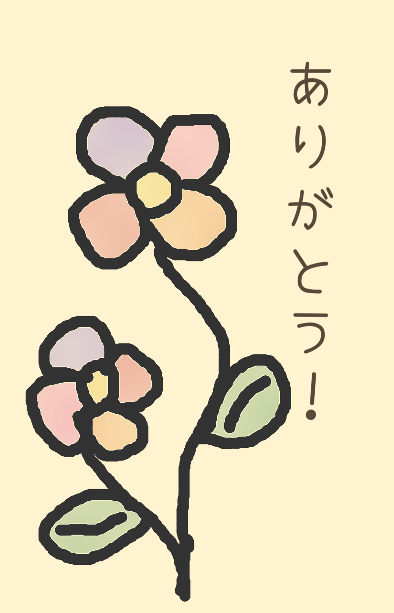

うまく描くより、たのしく描こう。
ゆっくり何度でも描き直しながら、世界にひとつの絵手紙を楽しみましょう
色も重ねて塗り直せるから、失敗を気にせず、自分のペースで楽しめます

ひと筆ずつ、気持ちをかたちに。
黒い線で描く → 淡い色をぬる → ことばを添える
文字や色、用紙の向きを確認してください。
「保存する」を押し、共有メニューから「画像を保存」を選ぶと、iPhoneの写真に保存できます。
新しく始めると、前の絵・色・文字は消えます。必要なら編集に戻ってPNG画像を保存してください。
ホームに戻ると、今の絵は消えます。先にPNG画像で保存しますか？